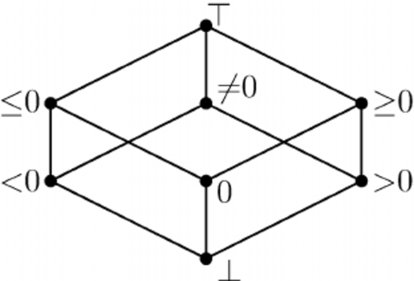

lyra.abstract_domains.numerical package¶
Submodules¶
Interval Abstract Domain¶
Non-relational abstract domain to be used for numerical analysis. The set of possible numerical values of a program variable in a program state is represented as an interval.
| Authors: | Caterina Urban and Simon Wehrli |
|---|
-
class
lyra.abstract_domains.numerical.interval_domain.IntervalLattice(lower=-inf, upper=inf)[source]¶ Bases:
lyra.abstract_domains.lattice.BottomMixin,lyra.abstract_domains.lattice.ArithmeticMixin,lyra.abstract_domains.lattice.BooleanMixin,lyra.abstract_domains.lattice.SequenceMixinInterval lattice. The bottom interval represents an empty set.

The default abstraction is the unbounded interval
[-oo, +oo].-
_less_equal(other: lyra.abstract_domains.numerical.interval_domain.IntervalLattice) → bool[source]¶ Partial order between default lattice elements.
Parameters: other – other lattice element Returns: whether the current lattice element is less than or equal to the other element [a, b] ⊑ [c, d]if and only ifc <= aandb <= d.
-
_meet(other: lyra.abstract_domains.numerical.interval_domain.IntervalLattice) → lyra.abstract_domains.numerical.interval_domain.IntervalLattice[source]¶ Greatest lower bound between default lattice elements.
Parameters: other – other lattice element Returns: current lattice element modified to be the greatest lower bound [a, b] ⊓ [c, d] = [max(a,c), min(b,d)].
-
_join(other: lyra.abstract_domains.numerical.interval_domain.IntervalLattice) → lyra.abstract_domains.numerical.interval_domain.IntervalLattice[source]¶ Least upper bound between default lattice elements.
Parameters: other – other lattice element Returns: current lattice element modified to be the least upper bound [a, b] ⊔ [c, d] = [min(a,c), max(b,d)].
-
_widening(other: lyra.abstract_domains.numerical.interval_domain.IntervalLattice) → lyra.abstract_domains.numerical.interval_domain.IntervalLattice[source]¶ Widening between default lattice elements.
Parameters: other – other lattice element Returns: current lattice element modified to be the widening [a, b] ▽ [c, d] = [(c < a ? -oo : a), (b < d ? +oo : b)].
-
_neg() → lyra.abstract_domains.numerical.interval_domain.IntervalLattice[source]¶ Negation of a default lattice elements.
Returns: current lattice element modified to be its negation - [a, b] = [-b, -a].
-
_add(other: lyra.abstract_domains.numerical.interval_domain.IntervalLattice) → lyra.abstract_domains.numerical.interval_domain.IntervalLattice[source]¶ Addition between two default lattice elements.
Parameters: other – other lattice element Returns: current lattice element modified to be the sum [a, b] + [c, d] = [a + c, b + d].
-
_sub(other: lyra.abstract_domains.numerical.interval_domain.IntervalLattice) → lyra.abstract_domains.numerical.interval_domain.IntervalLattice[source]¶ Subtraction between two default lattice elements.
Parameters: other – other lattice element Returns: current lattice element modified to be the difference [a, b] - [c, d] = [a - d, b - c].
-
_mult(other: lyra.abstract_domains.numerical.interval_domain.IntervalLattice) → lyra.abstract_domains.numerical.interval_domain.IntervalLattice[source]¶ Multiplication between two default lattice elements.
Parameters: other – other lattice element Returns: current lattice element modified to be the product [a, b] * [c, d] = [min(a*c, a*d, b*c, b*d), max(a*c, a*d, b*c, b*d)].
-
false() → lyra.abstract_domains.numerical.interval_domain.IntervalLattice[source]¶ False lattice element.
Returns: current lattice element modified to be the false lattice element The false lattice element is
[0,0].
-
classmethod
from_literal(literal: lyra.core.expressions.Literal) → lyra.abstract_domains.numerical.interval_domain.IntervalLattice[source]¶
-
is_false() → bool[source]¶ Test whether the lattice element is false.
Returns: whether the lattice element is false
-
is_maybe() → bool[source]¶ Test whether the lattice element is maybe.
Returns: whether the lattice element is maybe
-
is_top() → bool[source]¶ Test whether the lattice element is top.
Returns: whether the lattice element is top
-
is_true() → bool[source]¶ Test whether the lattice element is true.
Returns: whether the lattice element is true
-
lower¶ Current lower bound.
Returns: the current lower bound if the interval is not empty, Noneotherwise
-
maybe() → lyra.abstract_domains.numerical.interval_domain.IntervalLattice[source]¶ Maybe lattice element.
Returns: current lattice element modified to be the maybe lattice element The maybe lattice element is
[0,1].
-
top() → lyra.abstract_domains.numerical.interval_domain.IntervalLattice[source]¶ Top lattice element.
Returns: current lattice element modified to be the top lattice element The top lattice element is
[-oo,+oo].
-
true() → lyra.abstract_domains.numerical.interval_domain.IntervalLattice[source]¶ True lattice element.
Returns: current lattice element modified to be the true lattice element The true lattice element is
[1,1].
-
upper¶ Current upper bound.
Returns: the current upper bound if the interval is not empty, Noneotherwise
-
-
class
lyra.abstract_domains.numerical.interval_domain.IntervalState(variables: typing.Set[lyra.core.expressions.VariableIdentifier], precursory: lyra.abstract_domains.state.State = None)[source]¶ Bases:
lyra.abstract_domains.basis.BasisInterval analysis state. An element of the interval abstract domain.
Map from each program variable to the interval representing its value. The value of all program variables is represented by the unbounded interval by default.
Note
Program variables storing lists are abstracted via summarization.
-
_assign(left: lyra.core.expressions.Expression, right: lyra.core.expressions.Expression) → lyra.abstract_domains.basis.Basis¶ Assign an expression to another expression.
Warning
The current state could also be bottom or top.
Parameters: - left – expression to be assigned to
- right – expression to assign
Returns: current state modified by the assignment
-
_assume(condition: lyra.core.expressions.Expression) → lyra.abstract_domains.numerical.interval_domain.IntervalState[source]¶ Assume that some condition holds in the current state.
Warning
The current state could also be bottom or top.
Parameters: condition – expression representing the assumed condition Returns: current state modified to satisfy the assumption
-
_output(output: lyra.core.expressions.Expression) → lyra.abstract_domains.basis.Basis¶ Outputs something in the current state.
Warning
The current state could also be bottom or top.
Parameters: output – expression representing the output Returns: current state modified by the output
-
_substitute(left: lyra.core.expressions.Expression, right: lyra.core.expressions.Expression)¶ Substitute an expression to another expression.
Warning
The current state could also be bottom or top.
Parameters: - left – expression to be substituted
- right – expression to substitute
Returns: current state modified by the substitution
-
Sign Abstract Domain¶
Non-relational abstract domain to be used for numerical analysis. The set of possible numerical values of a program variable in a program state is represented by their sign (negative, zero, positive, …).
| Author: | Jérôme Dohrau and Caterina Urban |
|---|
-
class
lyra.abstract_domains.numerical.sign_domain.SignLattice(negative=True, zero=True, positive=True)[source]¶ Bases:
lyra.abstract_domains.lattice.ArithmeticMixin,lyra.abstract_domains.lattice.BooleanMixinSign lattice.
-
_less_equal(other: lyra.abstract_domains.numerical.sign_domain.SignLattice) → bool[source]¶ Partial order between default lattice elements.
Parameters: other – other lattice element Returns: whether the current lattice element is less than or equal to the other element
-
_meet(other: lyra.abstract_domains.numerical.sign_domain.SignLattice) → lyra.abstract_domains.numerical.sign_domain.SignLattice[source]¶ Greatest lower bound between default lattice elements.
Parameters: other – other lattice element Returns: current lattice element modified to be the greatest lower bound
-
_join(other: lyra.abstract_domains.numerical.sign_domain.SignLattice) → lyra.abstract_domains.numerical.sign_domain.SignLattice[source]¶ Least upper bound between default lattice elements.
Parameters: other – other lattice element Returns: current lattice element modified to be the least upper bound
-
_widening(other: lyra.abstract_domains.numerical.sign_domain.SignLattice) → lyra.abstract_domains.numerical.sign_domain.SignLattice[source]¶ Widening between default lattice elements.
Parameters: other – other lattice element Returns: current lattice element modified to be the widening
-
_neg() → lyra.abstract_domains.numerical.sign_domain.SignLattice[source]¶ Negation of a default lattice elements.
Returns: current lattice element modified to be its negation
-
_add(other: lyra.abstract_domains.numerical.sign_domain.SignLattice) → lyra.abstract_domains.numerical.sign_domain.SignLattice[source]¶
-
_sub(other: lyra.abstract_domains.numerical.sign_domain.SignLattice) → lyra.abstract_domains.numerical.sign_domain.SignLattice[source]¶
-
_mult(other: lyra.abstract_domains.numerical.sign_domain.SignLattice) → lyra.abstract_domains.numerical.sign_domain.SignLattice[source]¶
-
bottom() → lyra.abstract_domains.numerical.sign_domain.SignLattice[source]¶ Bottom lattice element.
Returns: current lattice element modified to be the bottom lattice element
-
false() → lyra.abstract_domains.numerical.sign_domain.SignLattice[source]¶ False lattice element.
Returns: current lattice element modified to be the false lattice element The false lattice element is
=0.
-
classmethod
from_literal(literal: lyra.core.expressions.Literal) → lyra.abstract_domains.numerical.sign_domain.SignLattice[source]¶
-
is_bottom() → bool[source]¶ Test whether the lattice element is bottom.
Returns: whether the lattice element is bottom
-
is_false() → bool[source]¶ Test whether the lattice element is false.
Returns: whether the lattice element is false
-
is_maybe() → bool[source]¶ Test whether the lattice element is maybe.
Returns: whether the lattice element is maybe
-
is_negative() → bool[source]¶ Indicates whether the element is certainly negative.
Returns: Trueif the element is negative.
-
is_positive() → bool[source]¶ Indicates whether the element is certainly positive.
Returns: Trueif the element is positive.
-
is_top() → bool[source]¶ Test whether the lattice element is top.
Returns: whether the lattice element is top
-
is_true() → bool[source]¶ Test whether the lattice element is true.
Returns: whether the lattice element is true
-
is_zero() → bool[source]¶ Indicates whether the element is certainly zero.
Returns: Trueif the element is zero.
-
maybe() → lyra.abstract_domains.numerical.sign_domain.SignLattice[source]¶ Maybe lattice element.
Returns: current lattice element modified to be the maybe lattice element The maybe lattice element is
≥0.
-
maybe_negative() → bool[source]¶ Indicates whether the element may be negative.
Returns: Trueif the element may be negative.
-
maybe_non_negative() → bool[source]¶ Indicates whether the element may be non-negative.
Returns: Trueif the element may be non-negative.
-
maybe_non_positive() → bool[source]¶ Indicates whether the element may be non-positive.
Returns: Trueif the element may be non-positive.
-
maybe_non_zero() → bool[source]¶ Indicates whether the element may be non-zero.
Returns: Trueif the element may be non-zero.
-
maybe_positive() → bool[source]¶ Indicates whether the element may be positive.
Returns: Trueif the element may be positive.
-
maybe_zero() → bool[source]¶ Indicates whether the element may be zero.
Returns: Trueif the element may be zero.
-
negative¶ Current negative flag.
Returns: the current negative flag
-
positive¶ Current positive flag.
Returns: the current positive flag
-
top() → lyra.abstract_domains.numerical.sign_domain.SignLattice[source]¶ Top lattice element.
Returns: current lattice element modified to be the top lattice element
-
true() → lyra.abstract_domains.numerical.sign_domain.SignLattice[source]¶ True lattice element.
Returns: current lattice element modified to be the true lattice element The true lattice element is
>0.
-
zero¶ Current zero flag.
Returns: the current zero flag
-
-
class
lyra.abstract_domains.numerical.sign_domain.SignState(variables: typing.Set[lyra.core.expressions.VariableIdentifier], precursory: lyra.abstract_domains.state.State = None)[source]¶ Bases:
lyra.abstract_domains.basis.BasisSign analysis state. An element of the sign abstract domain.
Map from each program variable to the sign representing its value.
-
_assign(left: lyra.core.expressions.Expression, right: lyra.core.expressions.Expression) → lyra.abstract_domains.basis.Basis¶ Assign an expression to another expression.
Warning
The current state could also be bottom or top.
Parameters: - left – expression to be assigned to
- right – expression to assign
Returns: current state modified by the assignment
-
_assume(condition: lyra.core.expressions.Expression) → lyra.abstract_domains.numerical.sign_domain.SignState[source]¶ Assume that some condition holds in the current state.
Warning
The current state could also be bottom or top.
Parameters: condition – expression representing the assumed condition Returns: current state modified to satisfy the assumption
-
_output(output: lyra.core.expressions.Expression) → lyra.abstract_domains.basis.Basis¶ Outputs something in the current state.
Warning
The current state could also be bottom or top.
Parameters: output – expression representing the output Returns: current state modified by the output
-
_substitute(left: lyra.core.expressions.Expression, right: lyra.core.expressions.Expression)¶ Substitute an expression to another expression.
Warning
The current state could also be bottom or top.
Parameters: - left – expression to be substituted
- right – expression to substitute
Returns: current state modified by the substitution
-